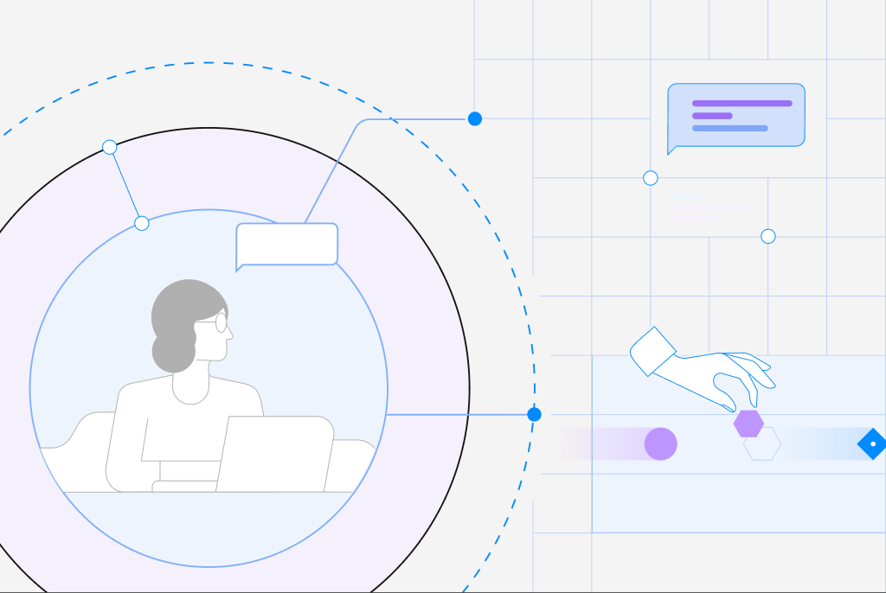

IBM watsonx Orchestrate · 2024–present
A shared visual language for agentic workflows.
I evolved an inherited Flow Builder toward a more robust, Carbon-aligned canvas system for automation, agentic work, and human tasks.
Over several years, I helped connect parallel feature work through a maintained component language. This page follows the canvas system, with Document Processing available as a focused feature deep dive.
Canvas system
Make complex workflows easier to read.
Nodes, connectors, flow controls, and user activities share a consistent grammar across the builder.
Each feature added more types of work to the canvas. I helped keep nodes, states, and connections consistent as the builder expanded.
Node library
Node states and sizes
These studies compare node states and sizes in light and dark modes.
01 · Key statesCompare state behavior. 02 · Size variantsCompare the scalable vocabulary.
Human work in the flow
User activities stay connected to the canvas.
I added a green User Activity family for tasks that need a person’s input.
The sequence shows how authors add an activity, configure its form, and return to the workflow.
Form sequence
-
01 · Place
Add the activity
A human-work container enters the automated flow while surrounding context stays visible.
-
02 · Configure
Shape the interaction
Form setup stays in context, so the activity can develop without losing its place in the workflow.
-
03 · Resolve
Return to the flow
The completed activity resolves back into the workflow as a readable part of the whole.
Canvas evolution
A visual system that kept expanding.
These examples show the existing builder, a V2 workflow, and a view of agent relationships.
I supported the agent canvas vision by helping align it with the workflow builder and its components.
-
01 · Current builderAs-is workflow context. -
02 · V2 workflow evolutionExpanded workflow vocabulary. -
03 · V2 agent hierarchyAgent relationships and delegation paths.
Workflow vocabulary
The studies below show individual flow controls, their containers, an example workflow, and the points where connections attach.
01 · ElementsName the available controls. 02 · ContainersContain behavior in the workflow. 03 · ApplicationPut the vocabulary to work. 04 · AnchorsKeep connection points legible.
Throughline
One system for automation, specialized work, and human judgment.
These studies show how the same components could support several kinds of work.
